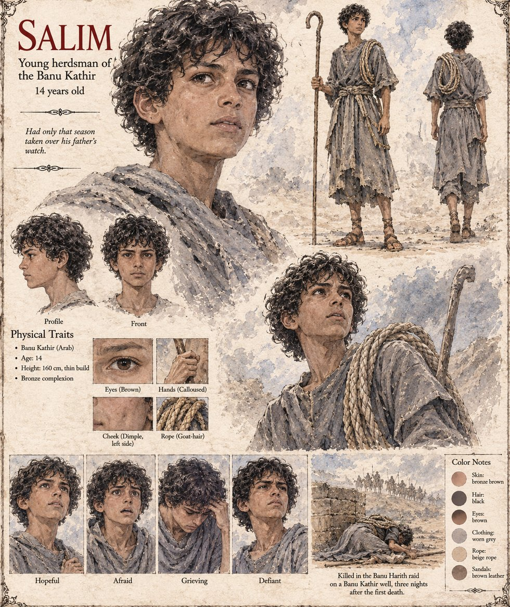

Salim
Young herdsman of the Banu Kathir · had only that season taken over his father's watch · killed at a well three nights after the first death · fourteen by the sheet
A young herdsman of the Banu Kathir who had only that season taken over his father's watch, killed in the Banu Harith raid on a Banu Kathir well three nights after the first death of the war. He is one of two herdsmen killed there, and neither had any more to do with the sentry's panic than Malik had to do with Amina's murder; the war's honor-arithmetic counts them as the answer to the rider. Within the week the Banu Kathir answer by burning a Banu Harith family's stored grain.
The sheet draws a thin boy of about 160 cm, with bronze-brown skin, black curls, brown eyes and a shy dimple on the left cheek, in a worn grey tunic and brown leather sandals, with a coil of goat-hair rope at his shoulder and his father's old crook in his calloused hand. Its expression panels run hopeful, afraid, grieving and defiant, and its last scene, Killed in the Banu Harith raid on a Banu Kathir well, three nights after the first death, shows him lying against a stone well wall as riders gather on the ridge. The sheet's line Had only that season taken over his father's watch is the manuscript's; the age of fourteen and everything visual are the sheet's.